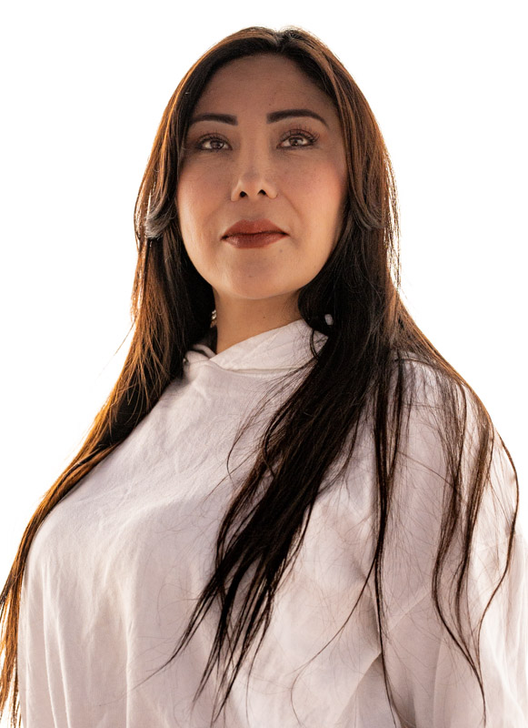
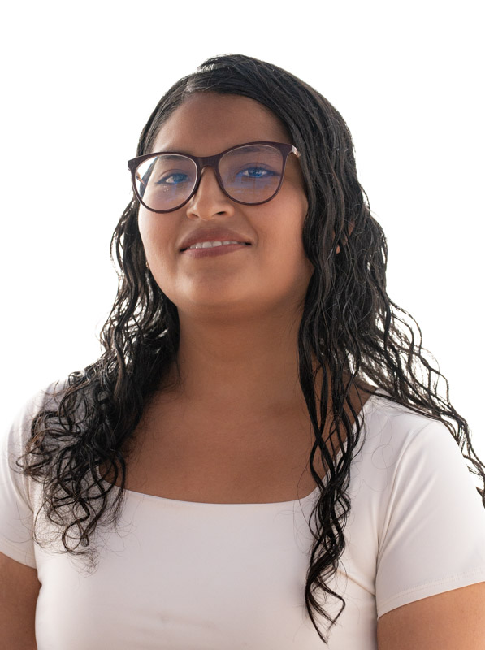
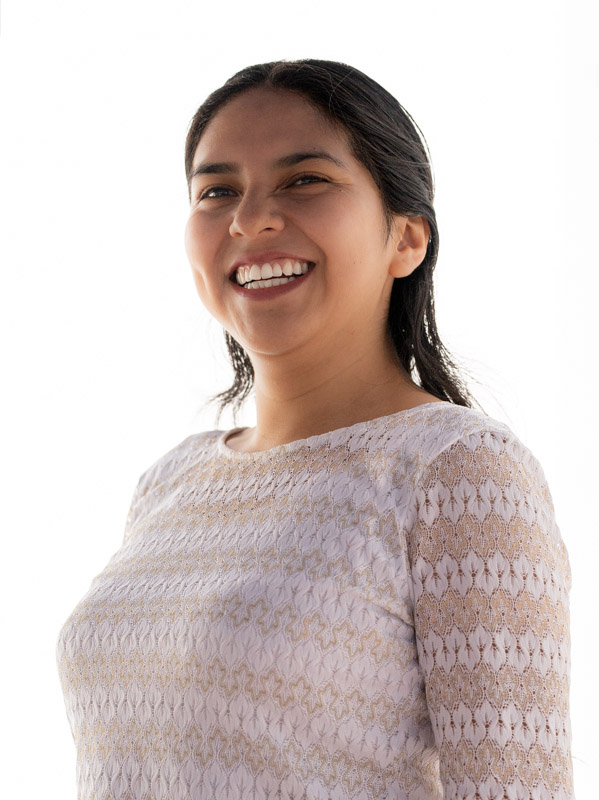
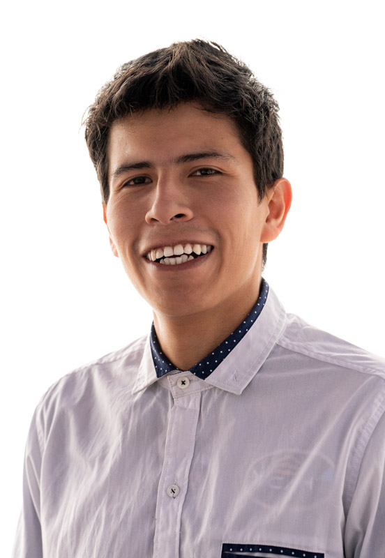
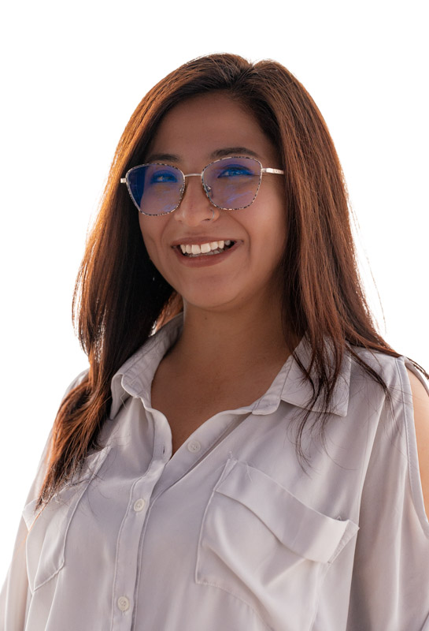
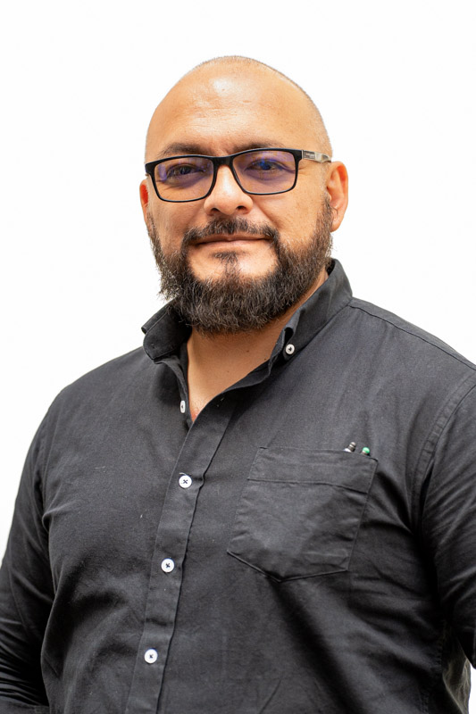

Face to Face & Online
Abbie
Every teacher at Me Gusta is personally trained by Elizabeth and Fernando. Not just fluent — warm, patient, and genuinely invested in your progress.





Elizabeth and Fernando didn't step back when the school grew — they stepped in. Both founders continue to teach regularly, covering classes and working with advanced students who want to go deep into the language.
Elizabeth teaches advanced conversation and writing classes. Her sessions focus on fluency, nuance, and helping students move from functional Spanish to something that feels truly natural.

Fernando covers classes across all levels and is especially popular with travellers on short intensive stays. His deep knowledge of Bolivian culture brings an authenticity to lessons that students find hard to find elsewhere.
Tell us about your level, your goals, and how you learn best — and we'll match you with the perfect teacher from day one.
Book a trial class →